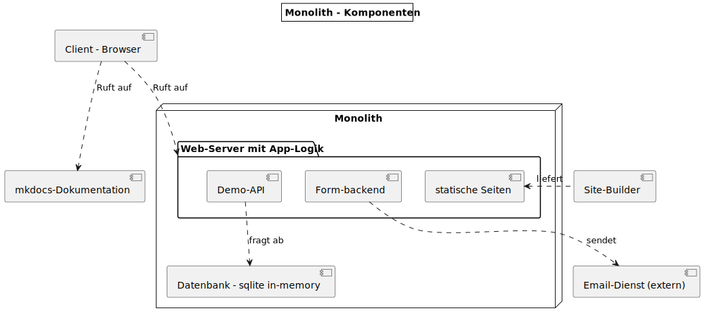
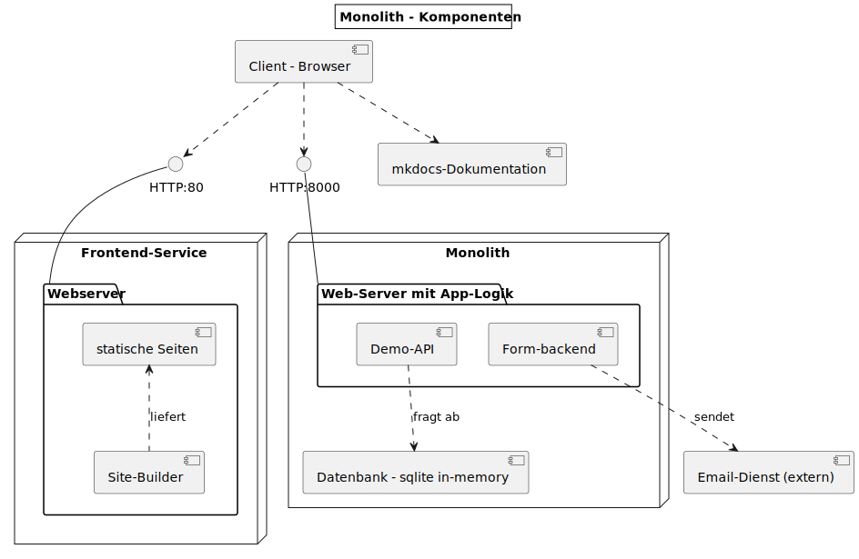

{% extends "../_base_template.html" %}
{% block title %}Lektion 5 - Container für die Entwicklung{% endblock %}

{% block sections %}
<section data-markdown>
<textarea data-template>
# <i class="fas fa-graduation-cap"></i> M347 - Container für Entwicklungsumgebung erstellen

## Heutiges Ziel

- Sie können mittels Dockerfiles Container für die Entwicklung der Applikation bauen
- Sie können Container mit den notwendigen Ressourcen (Bound Volumes, Networks) starten
- Sie können Container als Entwicklungswerkzeug anwenden
- Sie können verschiedene Container-Dienste miteinander verbinden (Networking)
- Endziel: Sie haben das Frontend (statische Webseiten) vom Monolithen extrahiert und als separaten Dienst konfiguriert

</textarea>
</section>

<!-- ----------------------------------------------------------------------------- -->
<section>
<section data-markdown>
<textarea data-template>
# <i class="fas fa-graduation-cap"></i> Auf dem Weg zur Microservice-Architektur

Unsere jetzige Architektur sieht folgendermassen aus:

<div>

</div>

Wir haben eine so genannte **"Monolithische Architektur:"**

* Die gesamte Applikation wird von einem Programm, einer Code-Basis, zur Verfügung gestellt
* Frontend (Webseite) sowie Backend (Server-Dienste) kommen vom selben Programm

Das ist grundsätzlich nicht falsch, oder auch kein Problem. Allerdings kann dies bei grösseren Projekten limitierend sein:

* das Skalieren (mehr Server-Power) wird schwierig, da Front- und Backend nicht separat skaliert werden können
* Die verschiedenen Dienste verwenden alle dieselbe Programmiersprache, dieselbe Architektur. Das kann limitierend sein bei unterschiedlichen Anforderungen.
* Das gesamte Team wirkt an derselben Code-Basis mit
* Bei Wartungsarbeiten muss die ganze Applikation heruntergefahren werden
</textarea>
</section>

<section data-markdown>
<textarea data-template>
# <i class="fas fa-graduation-cap"></i> Auf dem Weg zur Microservice-Architektur

Die Lösung für diese Probleme stellt die **"Microservice-Architektur"** dar: Sie trennt einzelne Komponenten in kleine Dienste auf, welche
unabhängig voneinander entwickelt und betrieben werden können.

Wir wollen dies an unserer Beispielapplikation Schritt-für-Schritt umsetzen. Als Erstes trennen / extrahieren wir den "Frontend"-Teil, also die eigentliche
Webseite, vom jetzigen Monolithen:

<div style="display: flex;gap:5px;">

<div>

* Die statische Webseite soll von einem eigenen Dienst, von einem eigenen Container ausgeliefert werden: Wir extrahieren den Frontend-Teil vom Monolithen

* Diesen setzen wir in 2 Versionen auf: Als **Entwicklungs-Version** (heute) und als **produktive Version** (nächstes Mal)

* Der Client kann via Frontend-Dienst (http-proxy) weiterhin auf die Formular- und API-Dienste zugreifen.

* **Ziel:** Wir haben einen eigenen Container, der nur die statische Webseite ausliefert, und "den Rest", also das Backend, als weiteren Container.

* Der **Client, also der Browser**, kommuniziert nur mit dem Frontend-Dienst: Dieser sorgt mittels eines HTTP-Proxys dafür,
  dass der Client weiterhin auf die Formular- und API-URLs zugreifen kann.
</div>
</div>

</textarea>
</section>

<section data-markdown>
<textarea data-template>
# <i class="fas fa-flask"></i> Umbau - Nun sind Sie dran!

Sie sollen nun diesen ersten Teil umsetzen: "Absplittern" des Frontends als Micro-Service. Gehen Sie dazu folgendermassen vor:

## Erstellen Sie einen Container für den Frontend-Dienst (Entwicklungsversion):

Unser Monolith liefert aktuell mittels NodeJS auch den statischen Teil aus - gestartet wird dieser mit `node server.js`.

- **Erstellen Sie einen eigenen Ordner** für Ihr "Frontend"-Projekt. Kopieren Sie dazu den gesamten "monolith"-Ordner.
- Kopieren Sie auch Ihre statischen Webseiten-Dateien in den "Frontend"-Ordner.
- **Erstellen Sie ein Dockerfile** für ein eigenes "frontend"-Image, basierend auf dem Image  "`node`" (https://hub.docker.com/_/node/).
- Räumen Sie `server.js` (jetzt in Ihrem Frontend-Ordner) auf: **Entfernen Sie alle Code-Teile, die nichts mit der Auslieferung des Frontend zu tun haben!**
- Entfernen Sie auch alle anderen Files im Frontend-Ordner, die Sie (für diesen Dienst) nicht mehr benötigen
- Erzeugen Sie mit dem Dockerfile nun einen Container, welcher:
  - Ihr lokales Webroot als **Bound Volume** dem Container 'überreicht' (Ordner `site`)
  - einen TCP-Port mappt, sodass Sie von aussen darauf zugreifen können
  - `node server.js` startet, resp. welchen Sie manuell mittels "`bash`" starten und den Frontend-Server manuell starten können

<i class="far fa-hand-point-right"></i> **Ziel:** Sie haben einen eigenen Container, `frontend`, der auf Ihrem eigenen Image basiert.
Der Container liefert Ihre statische Site über einen TCP-Port aus. Sie können den NodeJS-Server manuell mittels "`node server.js`" im Container starten.

<i class="far fa-hand-point-right"></i> Erstellen Sie nach erfolgeicher Umsetzung einen `git`-Commit, um den Stand Ihrer Arbeit zu sichern!

</textarea>
</section>

<section data-markdown>
<textarea data-template>
# <i class="fas fa-flask"></i> Umbau - Hints

Wir führen hier ein paar neue Konzepte ein:

- ein "**Bound Volume**" bindet ein (Host-)lokales Verzeichnis an ein Container-Verzeichnis:<br>
  Sie können so z.B. das lokale Verzeichnis `/pfad/zu/meiner/webseite` im Container ans Verzeichnis `/site` "binden"<br>
  Siehe <https://docs.docker.com/storage/volumes/>

- ein "**Port Mapping**" "verbindet" einen Host-TCP-Port mit einem Container-TCP-Port, sodass Netzwerk-Verkehr vom Host an den Container geleitet wird.
  Ansonsten wäre unsere Frontend-Webseite von aussen nicht erreichbar.<br>
  Siehe <https://docs.docker.com/engine/reference/commandline/run/#publish-or-expose-port--p---expose> und <https://docs.docker.com/engine/reference/commandline/port/> 

- Um einen Container beim Start in einem bestimmten "Working Directory" zu starten, benutzen Sie im Dockerfile die Anweisung "`WORKDIR`",<br>
  siehe: <https://docs.docker.com/engine/reference/builder/#workdir>

- Das Kommando, um Ihren Container zu starten, sollte ***in etwa*** so aussehen:

```
shell > docker run --name my-frontend -v /meine/seite/frontend:/server -p 80:3000 my-frontend-image 
docker> npm install
docker> node server.js
```

## Warum "Entwicklungsversion"?

Dieser Container dient dazu, unsere Frontend-Webseite zu entwickeln: Wir überreichen ihm den Ordner unserer Enwicklungs-Version der Webseite:
So können wir lokal in unserem gewohnten Code-Editor die Webseite editeren, und sie (vom Container ausgeliefert) testen.
Zudem starten wir den Container manuell, damit wir den Server-Teil einfach stoppen/neu starten können.
</textarea>
</section>
</section>

<section data-markdown>
<textarea data-template>
# <i class="fas fa-flask"></i> Umbau - Was haben wir erreicht?

**Haben Sie noch Fragen / Probleme beim Extrahieren?** - Wir schauen uns dies gemeinsam an.

Durch diesen Umbau haben wir nun folgendes erreicht:

* Wir haben einen eigenen Container, der sich nur um die Auslieferung des Frontends kümmert.
* Dadurch wird unser Frontend-Code (server.js) **einfacher, schlanker**: Er macht nur noch "etwas", anstatt alles.
* Wir können den Frontend-Dienst nun separat entwickeln, starten, deployen.

<i class="far fa-hand-point-right"></i> Im selben Zug haben wir aber die weiteren Dienste "kaputt gemacht":
Der Formular-Feedback sowie die API-Abfrage funktionieren nun nicht mehr.<br>
**Wir kümmern uns in den nächsten Lektionen um diese Dienste**.


</textarea>
</section>

{% endblock %}
